RYAN COOPER
GIS | DESIGN | COMMUNITY
Mapper for print and the web. Designer for clear, simple visual communication. Passionate about helping communities realize their missions.
- Ryan Cooper
- Raleigh, NC, USA
- ryancooper729@gmail.com
- Maptastik!
- ryan-m-cooper.com
Employment
-
Technology AnalystJuly 2017 - Present
City of Raleigh Parks, Recreations and Cultural Resources - Raleigh, NC
- Worked with PRCR planning staff to further develop and refine the department's GIS-based level of service and land acquisition models
- Cleaned up core departmental data and collaborated with IT to ensure updateable and findable
- Developed custom static maps and interactive data tools using ArcGIS Pro and ArcGIS Online to support planning and administrative decision-making
- Served as primary administrator and point of contact of PRCR geospatial data
- Developed SQL queries to standardize and speed up reporting on key park and greenway system statistics for reporting to the City Manager, City Council, and Trust for Public Land
- Delegated responsibilities between myself and part-time staff member to match tasks with strengths of the PRCR GIS team
PlannerMarch 2017 - July 2017
City of Raleigh Parks, Recreations and Cultural Resources - Raleigh, NC
- Collaborated on the Neighborhood & Community Connections project, a policy plan involving the development of a data-driven approach for the prioritization of connectivity enhancing projects throughout Raleigh's parks and greenways system
- Created Python scripts and Model Builder models to combine disparate Raleigh street and sidewalk data into a single dataset for network analysis
- Performed data transformation and manipulation for further GIS analysis using Python and pandas
- Created custom print and web maps for presentations using ArcGIS, ArcGIS Online, and Leaflet
GIS TechnicianApril 2014 - February 2017
Georgetown-Scott County Planning Commission - Georgetown, KY
- Created maps and maintained data using ArcGIS, ArcGIS Pro, QGIS, Leaflet, Mapbox, and Carto
- Updated parcel boundaries based on surveyor’s COGO descriptions
- Managed addressing for local E911 database
- Serviced data requests
- Collaborated with staff in a variety of local public departments to create custom print and web mapping solutions
- Provided data analysis and visualization support for planning staff for grant applications, county-wide Bike/Pedestrian plan, and the 2016 Comprehensive Plan
- Acted as staff support and participant in developing the forthcoming 2016 Scott County Comprehensive Plan
- Produced project templates, basemaps, and scripts to increase project efficiency
- Attended and interacted with public planning commission and public meetings
- Developed departmental logo and brand identity
- Created graphics for print documents and web content
- Managed the GSCPC’s web and social media presence
- Designed, built, and maintain the departmental and Comprehensive Plan websites
- Presented at state and national planning and GIS-related conferences
- Sought and integrated Open Source software into Esri-based workflows
-
Asset Information TechnicianDecember 2013 - April 2014
Kentucky Utility - Lexington, KY
- Mapped the installation and removal of electrical distribution services for the Lexington and Midway services areas.
- Field-checked existing services to for quality assurance.
-
Teaching AssistantAugust 2011 - May 2013
Department of Geography, University of Kentucky - Lexington, KY
- Led weekly discussion sections and provided individual support for introductory GIS/digital mapping courses.
- Provided technical support for undergraduate/graduate students involved in GIS-based community partnerships.
- Developed and coordinated course curriculum in cooperation with fellow teaching assistants and professors.
Projects
-
Leadership Scott CountySeptember 2016 - February 2017
Leadership Development
- Participated in monthly field trips with classmates to learn from various community leaders.
- Led information gathering and writing of the class project proposal.
-
Lexington Housing ProjectJuly 2015 - January 2017
Civic Activism
- Provided data extraction and visualization support for a group of Lexington citizens analyzing local property development and its implications for the local social, economic, and political landscape
-
maptimeLEXSeptember 2014 - January 2017
Outreach
- Founded, organized, and contributed to regular, beginner-friendly meetups targeted at helping those interested in learning cartographic concepts, tools, and techniques.
- Led a collaboration with OpenLexington to import Lexington’s building footprints into OpenStreetMap.
Education
-
University of KentuckyAugust 2011 - May 2013
Master of Arts, Geography
Thesis: Re-Placing Sprawl: Mapping Place in an American Suburb
Research Focus: GIS, place identity, digital mapping technologies
-
Ball State UniversityAugust 2010 - May 2011
Geography
Research Focus: Critical GIS, GIS in Community-University partnership
-
Indiana UniversityAugust 2009 - June 2010
Institute for European Studies
Research Focus: Post-WWII Dutch history, culture, and geography
-
Ball State UniversityAugust 2005 - May 2009
Bachelor of Arts, Geography
Bachelor of Arts, German
Geospatial Skills
-
Desktop GIS
-
ArcGIS 10.x
-
QGIS 2.x
-
ArcGIS Pro
-
-
Web Mapping
-
Leaflet
-
MapboxJS
-
Esri-Leaflet
-
Carto
-
ArcGIS Online
-
Google Maps JS API
-
Mapzen
-
-
Database
-
ArcSDE
-
ArcGIS for Server
-
PostrgreSQL/PostGIS
-
-
Mapping Utilities
-
Mapshaper
-
ArcPy
-
OGR/GDAL
-
-
OSM Tools
-
iD Editor
-
JOSM
-
Overpass Turbo
-
Programming
-
Web
-
HTML/CSS
-
JavaScript/jQuery
-
Bootstrap
-
Wix
-
Jekyll
-
WordPress
-
-
Scripting
-
Python
-
Ruby
-
R
-
-
Development Tools
-
Git/GitHub
-
Atom Editor
-
Sublime Text 2
-
-
Vector Graphics
-
Inkscape
-
Adobe Illustrator
-
-
Raster Graphics
-
GIMP2
-
Canva
-
-
North American Cartographic Society
- May 2015 - Present
Design
Professional Organizations
A selection of my work
-
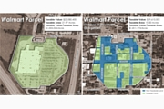
Walmart vs. Downtown Georgetown
Static Map -
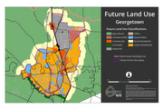Download Mapbook | View Export Script" >
Scott County Future Land Use Mapbook
Static Map -
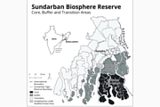
Sundarban Biosphere Reserve
Static Map -
Food: An Atlas
Static Map -
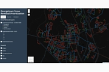
Georgetown Snow Removal
Interactive Map -
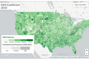
True Cost Collaboratory Mapping Project
Interactive Map -
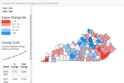
KY Population Change
Interactive Map -
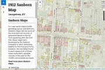
Georgetown Sanborn Map - 1912
Interactive Map -
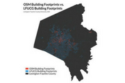
A Commonwealth of Openness - KAMP 2016
Presentation -
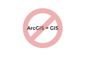
Toward a More-Than-Esri GIS - KAMP 2016
Presentation -
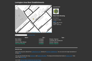
Spreadsheet Sorcery - maptimeLEX
Presentation -
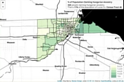
Open Source Web Mapping Workshop - Ohio URISA
Presentation -
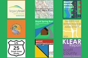
GSCPlanning.com Buttons
Graphic Design -
GSCPC Logo
Graphic Design -
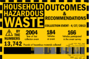
Household Hazardous Waste Infographic
Graphic Design -
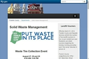
Franklin County Solid Waste Administrator Logo
Graphic Design
{kind=link}
{kind=link}
{kind=link}
{kind=link}
{kind=link}
{kind=link}
{kind=link}
{kind=link}
{kind=link}
{kind=link}
{kind=link}
{kind=link}
{kind=link}
{kind=link}
{kind=link}
{kind=link}
{kind=link}
{kind=link}
{kind=link}
{kind=link}
Contact info
- Raleigh, North Carolina, USA
- Email: ryancooper729@gmail.com
- Phone: 317.431.4871
- Website: www.ryan-m-cooper.com
- Blog: Maptastik!
- Twitter: @maptastik